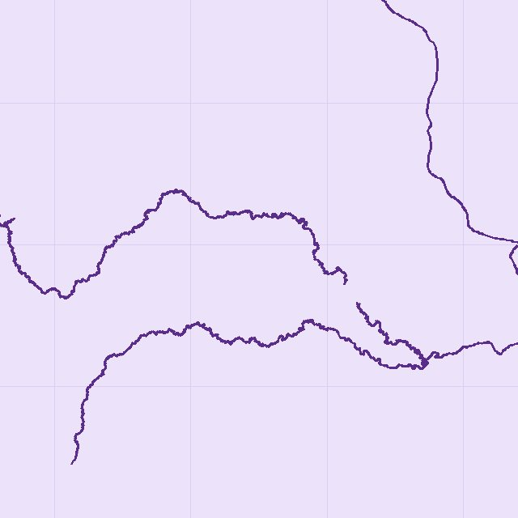
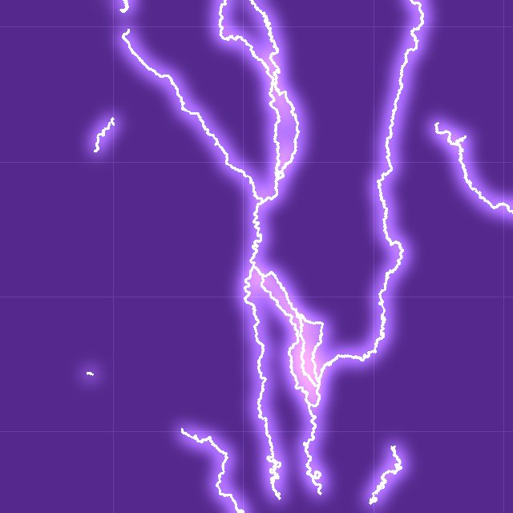
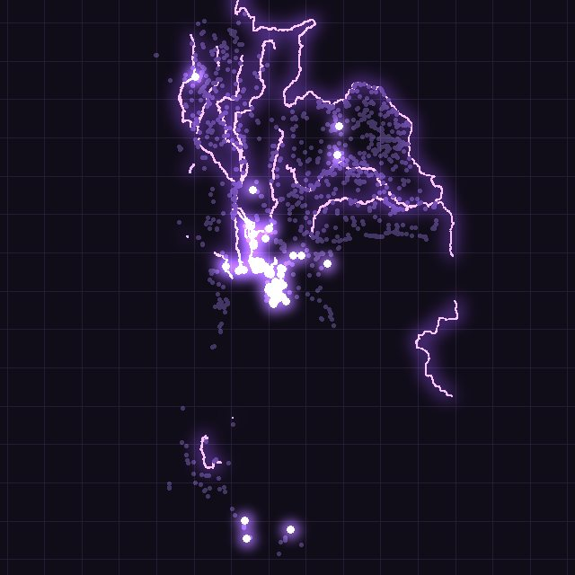
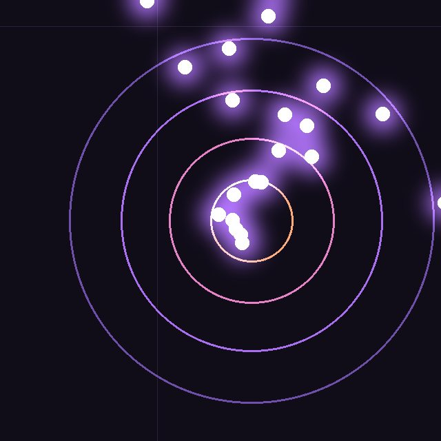
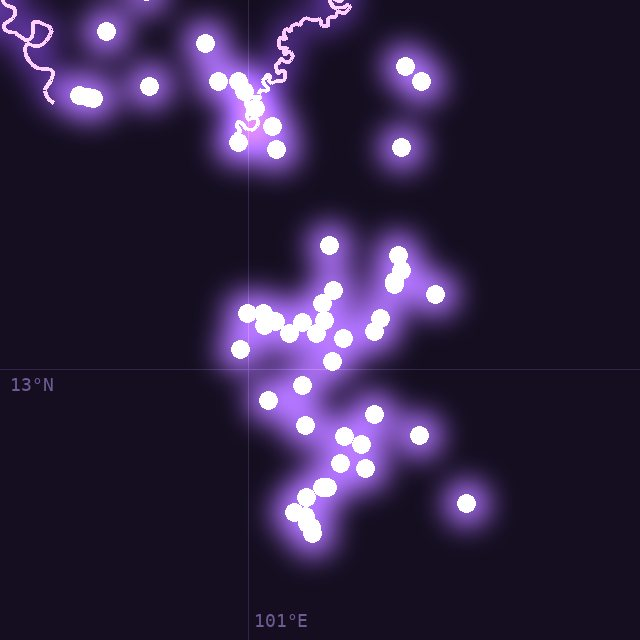

EMCCศูนย์เฝ้าระวังสิ่งแวดล้อม และความปลอดภัย
ข้อมูลเชิงพื้นที่ เพื่อนิคมอุตสาหกรรมที่ปลอดภัยและยั่งยืน
น้ำ สิ่งแวดล้อม และเหตุฉุกเฉิน ในที่เดียว
ติดตามสถานการณ์น้ำ คุณภาพสิ่งแวดล้อม และเหตุฉุกเฉินของนิคมอุตสาหกรรมทั่วประเทศ จากศูนย์ข้อมูลเดียวของ กนอ.





แม่น้ำสายหลักนิคมอุตสาหกรรม
ระบบข้อมูลของ EMCC
เลือกระบบที่ต้องการใช้งาน
 รายงาน
รายงาน
สถานการณ์น้ำในพื้นที่นิคมฯ
ข้อมูล: กรมชลประทาน · ThaiWaterระดับน้ำจากสถานีกรมชลประทาน พื้นที่เสี่ยงน้ำท่วม และสรุปสถานะรายนิคมอุตสาหกรรม
เปิดใช้งาน แผนที่
แผนที่
เรดาร์ฝนและสถานการณ์ประจำวัน
ข้อมูล: กรมอุตุนิยมวิทยาภาพเรดาร์ฝนซ้อนตำแหน่งนิคมอุตสาหกรรม สำหรับติดตามสถานการณ์ในแต่ละวัน
เปิดใช้งาน Dashboardภายในหน่วยงาน
Dashboardภายในหน่วยงาน
E-Monitoring สิ่งแวดล้อม
ข้อมูล: ระบบ e-Monitoring กนอ.ภาพรวมสถานีตรวจวัดคุณภาพอากาศ (AQMS) คุณภาพน้ำ (WQMS) และปล่องระบาย (CEMS)
เปิดใช้งาน Dashboardต้องเข้าสู่ระบบ
Dashboardต้องเข้าสู่ระบบ
สถิติอุบัติเหตุ EMCC
ข้อมูล: EMCC กนอ.สถิติอุบัติเหตุและเหตุฉุกเฉินในนิคมอุตสาหกรรม แยกตามประเภท พื้นที่ และช่วงเวลา
เปิดใช้งาน Dashboardต้องเข้าสู่ระบบ
Dashboardต้องเข้าสู่ระบบ
ผู้ประกอบการในนิคมฯ (e-PP)
ข้อมูล: ระบบ e-PP กนอ.ข้อมูลโรงงานและผู้ประกอบการภายในนิคมอุตสาหกรรมจากระบบ e-PP พร้อมแผนที่ตำแหน่ง
เปิดใช้งาน Dashboard
Dashboard
การใช้น้ำ นิคมฯ / ท่าเรือฯ
ข้อมูล: กนอ.ปริมาณการใช้น้ำของนิคมอุตสาหกรรมและท่าเรืออุตสาหกรรม เปรียบเทียบรายพื้นที่และรายภาค
เปิดใช้งาน